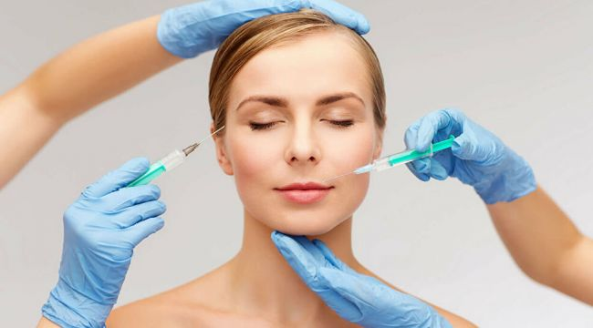

Estetik Sağlık Turizmi
Dünyayı etkisi altına alan yeni tip koronavirüs (Kovid-19) pek çok sektörü olduğu gibi sağlık turizmini de olumsuz etkiledi. Dış Ekonomik İlişkiler Kurulu (DEİK) Sağlık Komisyonu Üyesi ve Esteworld Saç Ekimi-Plastik Cerrahi Sağlık Grubu Yönetim Kurulu Başkanı Dr. Servet Terziler, sağlık turizminin yaşadığı zorlu süreci değerlendirirken, geleceğe dair öngörülerde bulundu. Olağan dışı bir döneme şahitlik edildiğini belirten Dr. Terziler’e göre artık sıkıntılı süreçte sona gelindi. Sağlık turizminin Türkiye’nin önemli döviz girdi kalemlerinden biri olduğunu vurgulayan Dr. Terziler, “Sisli hava gidiyor, güneş yüzünü göstermeye başlıyor” yorumunu yaptı. Dr. Terziler, sağlık turizminin yaz sonu, sonbahar başı gibi toplarlanacağını ve Türkiye’nin geçmişte olduğu gibi sağlık sektöründe marka ülke konumunu sürdüreceği görüşünü paylaştı.
Jenny Altika, Londra’da yaşayan 23 yaşında İngiliz genç bir bayan. Siyahi ırkın etnik burun yapısına sahip… Geniş ve basık bir burun, kalın burun derisi, büyük burun delikleri… Küçüklüğünden beri burun ameliyatı olmayı istemiş. Ve kendi ülkesinde uzun araştırmalar yapıp, pekçok plastik cerrahla görüştükten sonra cesareti kırılmış ve operasyondan vazgeçmiş. Daha sonra bir arkadaşından, Türkiye’de bu alanda çok başarılı bir doktor olduğunu öğrenmiş. Prof. Dr. Nazım Çerkeş’in yaptığı burun ameliyatlarının öncesi sonrası sonuçlarını görmüş ve uluslararası platformlardaki özellikle burun ameliyatları konusunda verdiği konferanslar, eğitimler, Uluslararası Estetik Plastik Cerrahlar Birliği ISAPS Başkan Yardımcılığı, Avrupa Rinoplasti Derneği’nin Kurucusu ve 2. Başkanı gibi ünvanlarından etkilenmiş. Dr. Çerkeş’e iletişime geçmiş. Bir dizi yazışma, fotoğraf üzerinden değerlendirme, ve ameliyat sonrası sonucu gösteren simulasyon çalışmaları neticesinde burun ameliyatı için İstanbul’a gelmeye karar vermiş.
İşte Jenny, 11 Ocak Pazartesi günü bu şekilde kliniğimize geldi. 12 Ocak Salı günü için ameliyatını zaten programlamıştık. Kendisine 3 saat süren bir burun ameliyatı yaptık. Çok doğal görünümlü neredeyse model olabilecek bir burun yapısına sahip olacak. Ameliyatın bitiminde çektiğimiz fotoğraf, henüz ödem oluşmadığı için, aylar sonra Jenny’nin burnunun alacağı nihai sonucu gösteriyor.